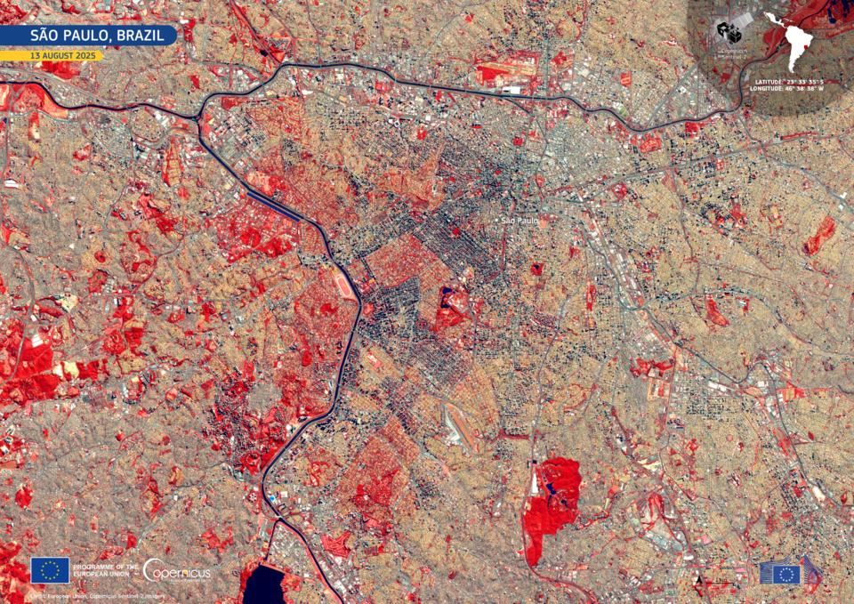

16 Mudanças Climáticas e Paisagem
16.1 Um planeta mais quente e paisagens em movimento
O clima da Terra está mudando. A temperatura média global aumentou aproximadamente 1,1°C desde o período pré-industrial, e as projeções do IPCC indicam que, dependendo da trajetória de emissões, esse aumento pode atingir entre 1,5°C e 4,5°C até o final do século XXI (IPCC, 2014). Embora 1 ou 2 graus possam parecer pouco na experiência cotidiana (a diferença entre um dia de 28°C e um de 30°C é imperceptível), para os ecossistemas essa mudança é profunda. Espécies com faixas estreitas de tolerância térmica são forçadas a migrar para altitudes mais elevadas ou latitudes mais altas. Regimes de chuva se alteram, com secas mais longas em algumas regiões e chuvas mais intensas em outras. Eventos climáticos extremos (ondas de calor, secas severas, tempestades intensas, incêndios florestais) tornam-se mais frequentes e mais severos.
A Ciência da Paisagem ocupa uma posição central nesse tema porque a paisagem é, simultaneamente, causa e consequência das mudanças climáticas. A conversão de florestas em pastagens e cultivos emite CO₂ para a atmosfera (a paisagem como causa). As mudanças nos padrões de temperatura e precipitação alteram a distribuição de espécies, a produtividade dos ecossistemas e a viabilidade de usos agrícolas (a paisagem como consequência). E as decisões de manejo da paisagem (restauração florestal, preservação de turfeiras, adoção de sistemas agroflorestais) podem mitigar as emissões e aumentar a resiliência dos sistemas socioecológicos (a paisagem como solução).
16.2 Mudanças de uso do solo e emissões de carbono
A mudança de uso do solo é a segunda maior fonte de emissões de gases de efeito estufa (GEE) do planeta, atrás apenas da queima de combustíveis fósseis. Quando uma floresta é derrubada e queimada, o carbono armazenado na biomassa (troncos, galhos, raízes, folhas) e no solo é liberado para a atmosfera na forma de CO₂. No Brasil, as mudanças de uso do solo respondem por cerca de 46% das emissões nacionais de GEE, uma proporção excepcionalmente alta em comparação com países industrializados, onde as emissões são dominadas pela indústria e pelo transporte.
A quantidade de carbono liberada depende do tipo de ecossistema convertido e do uso que o substitui. A Tabela 16.1 apresenta estimativas de estoques de carbono para diferentes fitofisionomias brasileiras.
| Fitofisionomia | Carbono na biomassa aérea (Mg C ha⁻¹) | Carbono no solo 0-30 cm (Mg C ha⁻¹) | Carbono total aproximado (Mg C ha⁻¹) |
|---|---|---|---|
| Floresta Amazônica densa | 150 - 200 | 40 - 80 | 190 - 280 |
| Mata Atlântica madura | 100 - 180 | 40 - 70 | 140 - 250 |
| Cerrado stricto sensu | 15 - 40 | 50 - 90 | 65 - 130 |
| Caatinga arbórea | 20 - 40 | 20 - 40 | 40 - 80 |
| Pastagem bem manejada | 5 - 10 | 30 - 60 | 35 - 70 |
| Soja / cultivo anual | 2 - 5 | 25 - 50 | 27 - 55 |
A Tabela 16.1 permite estimar o impacto em carbono de diferentes transições de uso do solo. A conversão de um hectare de Floresta Amazônica densa (com estoque total de ~235 Mg C ha⁻¹ em valor médio) para pastagem (~52 Mg C ha⁻¹) libera aproximadamente 183 Mg C ha⁻¹, equivalente a 671 toneladas de CO₂. Se multiplicarmos por 10.000 hectares desmatados em um ano (ordem de grandeza das taxas recentes na Amazônia), a emissão apenas dessa conversão atinge ~6,7 milhões de toneladas de CO₂. Essa dimensão numérica explica por que o combate ao desmatamento é a estratégia de mitigação climática com maior potencial de redução rápida de emissões no Brasil, e por que o monitoramento da dinâmica de uso do solo (discutido no Capítulo 11 e no Capítulo 13) é uma questão de relevância climática global.
Um aspecto frequentemente subestimado é o carbono armazenado no solo. No Cerrado, por exemplo, o carbono do solo (50-90 Mg C ha⁻¹) supera o da biomassa aérea (15-40 Mg C ha⁻¹). A conversão do cerrado para cultivo mecanizado mobiliza o solo e pode liberar uma fração significativa desse carbono edáfico, especialmente nos primeiros anos após a conversão. A adoção de plantio direto, que minimiza a perturbação do solo, é uma estratégia de mitigação que opera na interface entre manejo agrícola e clima, reduzindo as perdas de carbono do solo sem eliminar a produção.
16.3 Resiliência climática e estrutura da paisagem
A capacidade de uma paisagem de absorver perturbações climáticas sem perder sua funcionalidade ecológica e produtiva é chamada de resiliência climática. Paisagens mais resilientes mantêm seus serviços ecossistêmicos (provisão de água, regulação de temperatura, sustentação da biodiversidade) mesmo diante de eventos climáticos extremos, enquanto paisagens frágeis podem colapsar rapidamente.
A estrutura da paisagem influencia a resiliência de múltiplas formas. A diversidade de coberturas funciona como um seguro contra riscos climáticos. Uma paisagem com floresta, cerrado, pastagem silvipastoril, agrofloresta e cultivos diversificados tem maior probabilidade de manter algum nível de produtividade e serviços sob diferentes cenários climáticos do que uma paisagem dominada por monocultura. Se uma seca severa compromete a soja, os sistemas agroflorestais e as pastagens sombreadas podem manter alguma produção. Se um evento de geada atípica destrói cultivos tropicais, as espécies arbóreas mais robustas sobrevivem e mantêm a cobertura do solo.
A conectividade entre habitats naturais permite que espécies se desloquem em resposta a mudanças nas condições climáticas locais, buscando microhabitats mais adequados. Em paisagens fragmentadas e desconectadas, espécies que não conseguem dispersar ficam “presas” em fragmentos que podem se tornar climaticamente inadequados, sofrendo extinção local sem possibilidade de recolonização. A manutenção e o restabelecimento de corredores ecológicos orientados no sentido de gradientes altitudinais (conectando terras baixas a terras altas) e latitudinais (conectando regiões mais quentes a mais frias) são estratégias de adaptação às mudanças climáticas baseadas na estrutura da paisagem.
A Figura 16.1 sintetiza como diferentes configurações de paisagem respondem a perturbações climáticas.
A Figura 16.1 permite visualizar que a resiliência não é uma propriedade intrínseca de um ecossistema isolado, mas uma propriedade emergente da paisagem como um todo. A diversidade de coberturas, a conectividade entre habitats e a presença de elementos estruturais (áreas úmidas, matas ripárias, afloramentos protegidos) criam uma “rede de segurança” que permite à paisagem manter suas funções mesmo quando componentes individuais são afetados. Essa perspectiva reforça a importância de abordar a adaptação climática na escala da paisagem, e não apenas na escala da propriedade ou do fragmento individual.
16.4 Soluções baseadas na natureza para o clima
O conceito de Soluções baseadas na Natureza (Nature-based Solutions, NbS) refere-se a ações de proteção, manejo sustentável e restauração de ecossistemas que, simultaneamente, abordam desafios sociais (mudanças climáticas, segurança hídrica, risco de desastres) e promovem a conservação da biodiversidade. No contexto climático, as NbS abrangem três estratégias complementares que operam na escala da paisagem.
A conservação de ecossistemas naturais evita a emissão do carbono armazenado. Cada hectare de floresta preservado mantém na biomassa e no solo centenas de toneladas de CO₂ que seriam emitidas pela conversão. A restauração de ecossistemas degradados recaptura carbono da atmosfera à medida que a vegetação cresce e o solo se recupera. Florestas tropicais em regeneração podem acumular entre 3 e 11 Mg C ha⁻¹ ano⁻¹ nas primeiras décadas, dependendo do clima, do solo e do método de restauração. O manejo sustentável de paisagens produtivas, incluindo plantio direto, integração lavoura-pecuária-floresta, sistemas agroflorestais e manejo de pastagens (evitando degradação), reduz emissões e aumenta estoques de carbono no solo agrícola.
O potencial das NbS é significativo. Estimativas globais sugerem que a conservação e restauração de ecossistemas naturais, combinadas com manejo sustentável de terras agrícolas, podem contribuir com até 30% da mitigação necessária para manter o aquecimento abaixo de 2°C. No Brasil, com seus vastos estoques de carbono florestal, extensas áreas degradadas passíveis de restauração e grande área agrícola com potencial de intensificação sustentável, as NbS representam uma oportunidade estratégica de contribuição climática que depende diretamente de decisões de planejamento da paisagem.
16.5 Ilhas de calor e paisagem urbana
As mudanças climáticas se manifestam de forma particularmente intensa em paisagens urbanas, onde o efeito de ilha de calor (urban heat island) amplifica o aquecimento global. A substituição de vegetação por superfícies impermeáveis (asfalto, concreto, telhados) altera o balanço de energia da superfície. Materiais escuros absorvem radiação solar e a reemitem como calor, enquanto a ausência de vegetação elimina o resfriamento evapotranspirativo. O resultado é que centros urbanos podem ser de 2°C a 8°C mais quentes que suas áreas rurais circundantes, especialmente à noite. A imagem termal de uma cidade (Fig. Figura 16.2) permite visualizar esse gradiente, no qual superfícies impermeáveis e edifícios concentram temperaturas elevadas, enquanto parques e corpos d’água funcionam como ilhas de frescor.

A Ciência da Paisagem contribui para a mitigação de ilhas de calor ao demonstrar que a distribuição espacial de áreas verdes importa tanto quanto sua quantidade total. Um grande parque central concentra o resfriamento em seu entorno imediato, enquanto múltiplas áreas verdes menores distribuídas pela cidade podem resfriar uma área total maior. A arborização de vias, a implantação de tetos e paredes verdes, a manutenção de corredores ripários urbanos e a criação de infraestrutura verde (jardins de chuva, biovaletas, wetlands construídas) são estratégias que modificam a estrutura da paisagem urbana para aumentar sua resiliência climática, melhorar o conforto térmico e reduzir os custos de climatização.
DicaPara aprofundar
O Sistema de Estimativas de Emissões e Remoções de Gases de Efeito Estufa (SEEG), mantido pelo Observatório do Clima (seeg.eco.br), disponibiliza dados anuais de emissões brasileiras por setor e por estado. Explore a evolução das emissões por mudança de uso da terra ao longo das últimas três décadas e observe como as taxas de desmatamento na Amazônia (monitoradas pelo PRODES) se correlacionam com as estimativas de emissão. Esse exercício conecta os conceitos de dinâmica de uso do solo (Capítulo 13), detecção de mudanças (Capítulo 11) e mudanças climáticas, ilustrando como as ferramentas da Ciência da Paisagem fundamentam diagnósticos climáticos nacionais.